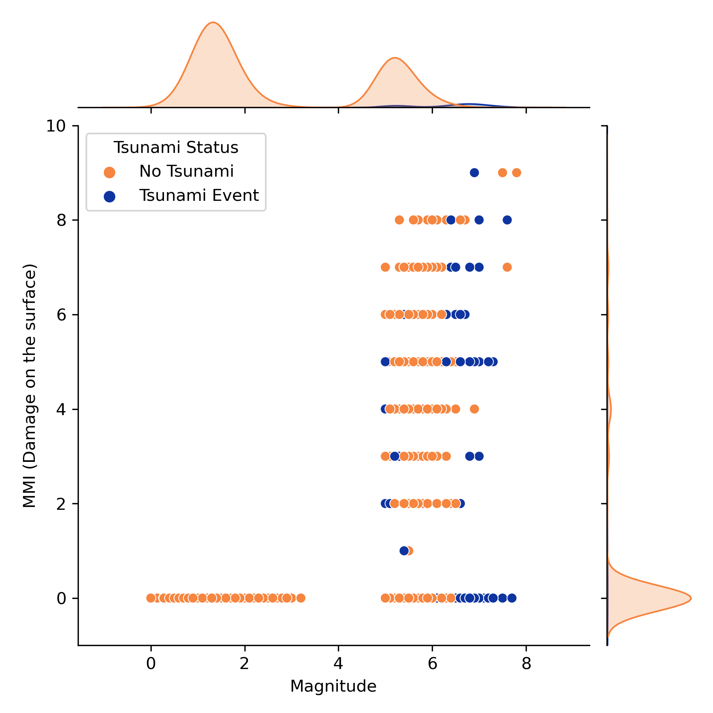
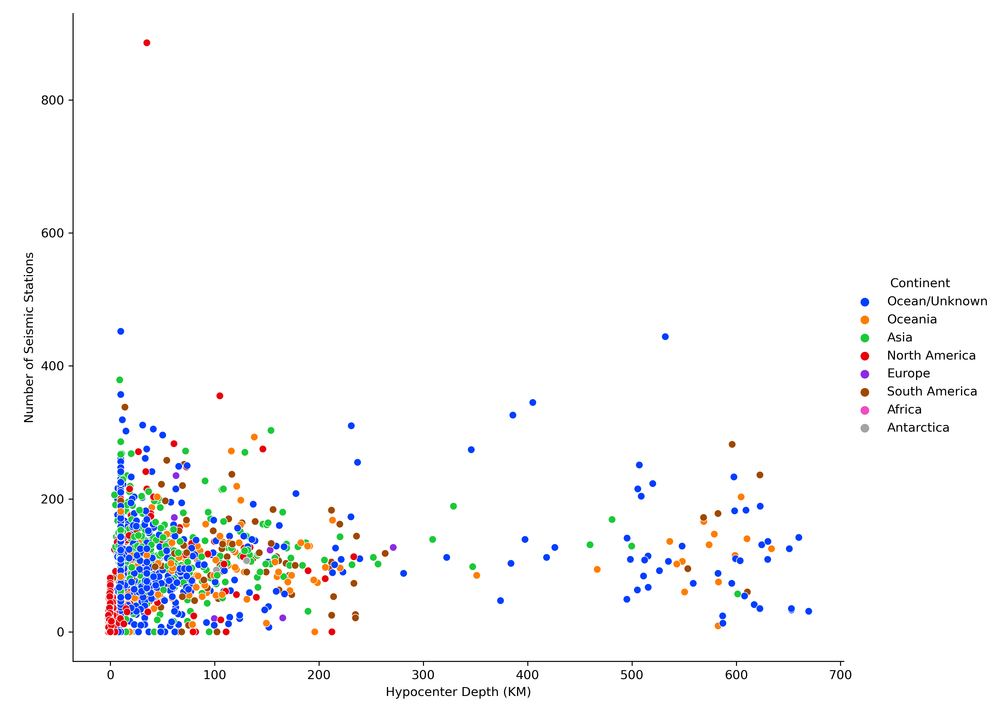

Static graphs
The below graph shows the relationship between the MMI of the earthquake and the Magnitude of the earthquake. Along the top and right axes, the distributions of the fucntions are shown and the colour coordination here informs you about wether or not a tsunami resulted from the event. What we found interesting is that there were some earthquakes that measured as high as 7 and above that did not produce a tsunami and produced minimal mmi or surface damage. This implies that although the earthquake did not originate on land, it did not produce a tsunami. This may be the result of the eartquake originating deep below the ocean's surface. We found this very cool and thought more investigation should follow.
The second of our static graphs shows the relationship between the depth below the earth's core and the number of seismic stations that are posted. Here we see that there are a numer of stations that are posted at over 600 kilometers deep! Given that it is widely considered dangerous for a scuba diver to go beyond 25 meters for a multitude of reasons, we found this incredible! The data that we have, unfortunately does have
Dynamic graphs
Below, we have a number of interactive graphs that the user can click on an look at, through an iframe of the original website hosting the apps. The graphs themselves show the location of the seismic activities aswell as their magnitude and a number of other variable and can be explored by the user. Please take the time to run go through the graphs and interactive with the dash board apps.
And some more interactive graphs for the viewers.